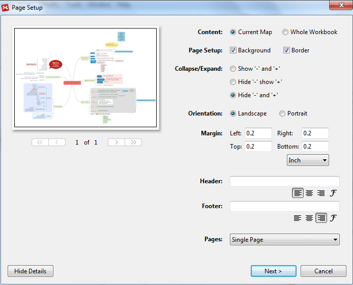
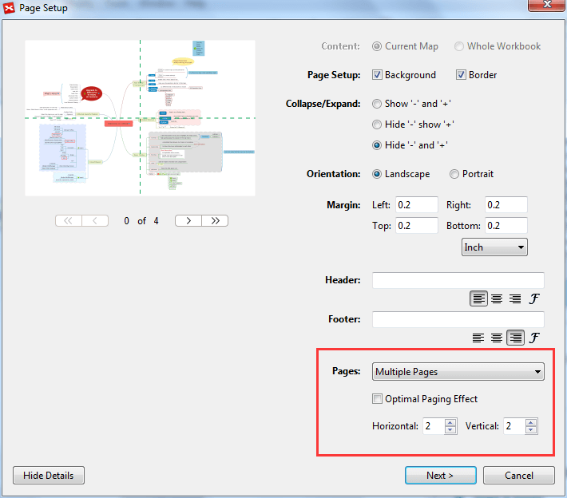

Printing a map in XMind is easy. Just follow these steps:
- Select a map.
- Open the print preview dialog by either
- Choose 'File > Print' on the menu.
- Use the shortcut 'Ctrl+P'.
- Adjust the print settings: Print content, Page, Orientation, Margins, Header/Footer text.
- Click 'Next' and choose the printer you wish to print to.
- Click 'Print'.

Multi Page PrintWhen facing a large map, you can not display all details onto one single map. By printing a large map onto multiple pieces of paper and then tape the pieces together, you won't lose any details of your mind maps. You can also spread them horizontally or vertically over multiple pages for a better overview or to display as a poster.
To Print Multi-pages:
- The same first 3 steps as Single Page Print
- Change Pages to Multiple Pages and set the Horizontal and Vertical value
- Click 'Next' and choose the printer you wish to print to.
- Click 'Print'.
